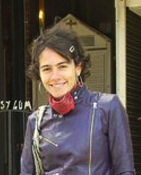
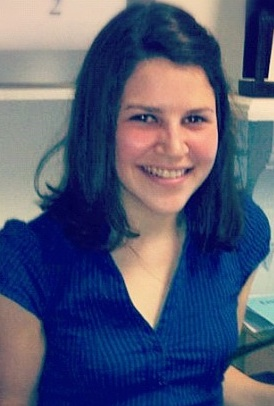
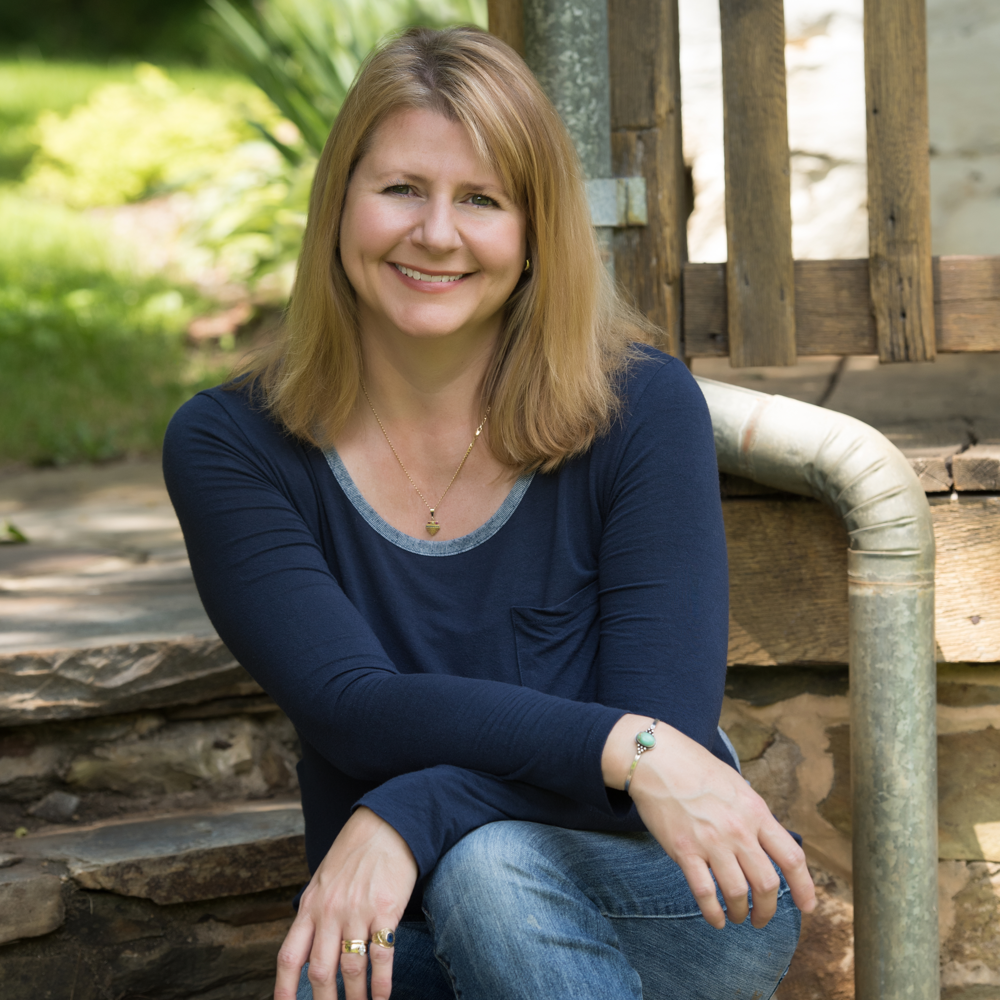

Contact
Michele Greet, Lead Researcher and Project Supervisor
Dr. Michele Greet is Associate Professor of 20th-century Latin American art history at George Mason University in Fairfax, Virginia. She is currently working on a book manuscript entitled Transatlantic Encounters: Latin American Artists in Paris between the Wars, 1918-1939 with the support of a National Endowment for the Humanities Fellowship (2012-2013). This website is meant as a companion to the book. Her first book, Beyond National Identity: Pictorial Indigenism as a Modernist Strategy in Andean Art, 1920-1960, came out with Penn State University Press’s Refiguring Modernism Series in 2009. Selected publications include: “From Indigenism to Surrealism: Camilo Egas in New York, 1927-1946” in Nexus: New York, 1900-1945: Encounters In The Modern Metropolis. Yale University Press, 2009; “Manifestations of Masculinity: The Indigenous Body as a Site for Modernist Experimentation in Andean Art,” Brújula, Dec. 2007, 6: 1; “Inventing Wifredo Lam: The Parisian Avant-Garde’s Primitivist Fixation.” Invisible Culture: An Electronic Journal for Visual Culture. 5, Jan. 2003. She has lectured widely at museums and universities across the United States.
Contact: mgreet@gmu.edu

Adriana Ospina, Research Assistant
Adriana Ospina is a Colombian-born art historian who is currently pursing an MA in Art History at George Mason University and working as the Education Coordinator, Archivist and Permanent Collection Steward at the Art Museum of the Americas of the Organization of American States. Adriana holds a Bachelor's degree in History from the Pontifícia Universidad Javeriana in Bogotá, Colombia. At the AMA, Adriana has developed exhibition-related educational programs tailored to the specific needs of each participating group. The tours, workshops for schools and families, gallery talks, symposiums and the binational project for at-risk youth between El Salvador and Washington, DC, have all focused on art as a tool to learn aesthetics, history, language and engagement with social issues, as well as a tool to prevent violence. Adriana has also written catalog entries for the About Change exhibition, which was organized by the World Bank in 2010. Currently at the AMA Adriana is working on the Documents of 20th-Century Latin American and Latino Art: A Digital Archive and Publications Project at the Museum of Fine Arts, Houston. Aside from her work at the AMA, she wrote the exhibition essay of American artist's Adam de Boer, On Finca, 2010.

Beth Shook, Web Designer
Beth Shook is an Austin, Texas-based museum educator, art writer, and freelance web developer. She has a BA in Spanish from Georgetown University and an MA in Art History from George Mason University, where she focused her research on 20th-century Latin America and museum practice. Through her coursework, Beth has been able to combine her passion for the visual arts, linguistics, and the Spanish-speaking world. She has held curatorial internships at the Corcoran Gallery of Art and the Smithsonian American Art Museum in Washington, DC. Her reviews of contemporary art have appeared in Washingtonian Magazine and Prince of Petworth. She currently works in the Education Department at the Blanton Museum of Art at the University of Texas, Austin.
Melissa Derecola, Web Manager & Research Assistant
Melissa Derecola is a Graphic Designer who is currently pursuing an MA in Art History at George Mason University. Melissa received her BA in Graphic Design Communication from Philadelphia University, after which she spent 10 years working in Marketing and Graphic Design in Northern Virginia. Her work with the Transatlantic Encounters project has focused on the researching and mapping of the Paris Galleries, along with enhancing the web site’s user experience. Outside of George Mason she has spent time as a volunteer at the Smithsonian American History Museum and the Seattle Art Museum where she took part in the installation of Sandra Cinto’s site specific work Encontro das Águas in 2012.
Suzanne Gilbert, Research and Web Assistant
Suzanne Gilbert received her BA in Art History from George Mason University and is currently pursuing a MA in Art History, also at George Mason University. She has enjoyed the cultural delights found in the Washington, DC area all her life and regularly participates in events and exhibitions at the many galleries and museums of the nation’s capital. She comes from a family of artists, and has collaborated with her sister, the sculptor Melissa Ichiuji, on exhibits of her work in Paris, Berlin and Washington, DC. Most recently, Suzanne’s essay “The Pilgrimage of an Artist” was published in the catalog for the exhibition The Promise of Peace: Violet Oakley’s United Nations Portraits on view at the Woodmere Museum in Philadelphia. The research she conducted on the Parisian residences of Latin American artists and their art work as part of the Transatlantic Encounters project has provided a valuable complement to her primary scholarly focus on American art, particularly American Impressionism and works made in the United States at the turn of the twentieth century and during the interwar period. For over twenty-five years, she has worked in public service for local government and anticipates a second career that will fulfill her desire to work in the art field.

Julie Goforth, Web Assistant
Julie Goforth received her BA in Art History from Florida State University and is currently pursuing an Art History MA at George Mason University. She is a web design specialist, graphic designer, and has a graduate certificate in Digital Curation from Johns Hopkins University. Julie has worked with businesses and cultural heritage organizations for more than 10 years, including the Smithsonian Institution Archives, Oatlands Historic House and Gardens in Leesburg, VA and the Waterford Foundation in Waterford, VA. Julie also volunteers for a local non-profit, the Edwin Washington Project, that is documenting and preserving African-American school history in Loudoun County during the segregation period. She recently completed a two-year digital archiving contract with the Smithsonian Institution Archives and continues to work on the Science Media Group project as a volunteer. Julie added some custom styling to the Transatlantic Encounters website after a change to a new theme and created some new functionality with images and links.
Contributors
Below is a list of people who have submitted revisions and contributions to our website. I am incredibly grateful for their input. This is becoming a fantastic transcontinental exchange!
- Michel Bastarache
- James Beeler
- Dominique Bermann Martin
- José Darío Gutiérrez
- Rémi Fauxbaton
- Georgina Gluzman
- Rodrigo Gutiérrez Viñuales
- Maya Jiménez
- Rachel Kaplan
- Marianne Le Morvan
- Marc J. Masurovsky
- Gloria Santos
- Fernando Saavedra
- Noëlle Sickels
- Gerardo Traeger
- Elodie Vaudry
- Stanislav Volkov